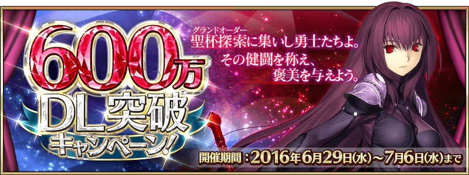
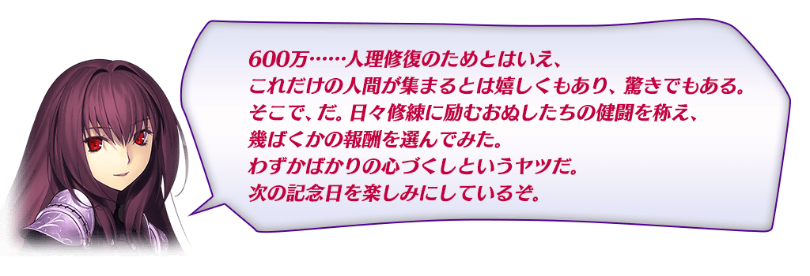
◆活動舉辦期間◆
2016年6月29日（三）16:00～7月6日（三）12:59

|
在下列期間中，6次登入（1天算1次）的話贈送最多聖晶石21個和呼符1枚！ ◆活動舉辦期間◆ ※第1次的登入加成，從6月30日（四）AM3:00配發。 |
 |
| 登入次數 | 贈送內容 |
|---|---|
| 第1次 | 聖晶石1個 |
| 第2次 | 聖晶石2個 |
| 第3次 | 聖晶石3個 |
| 第4次 | 聖晶石4個 |
| 第5次 | 聖晶石5個 |
| 第6次 | 聖晶石6個、呼符1枚 |
全部的Free關卡的AP消費以期間限定變成1/2。
無論如何藉此機會，挑戰Free關卡吧！
◆AP消費1/2期間◆
2016年6月29日（三）16:00～7月6日（三）12:59
◆對象◆
冬木、奧爾良、羅馬七省、歐開諾斯、倫敦、合眾為一的全部Free關卡
※冬木、奧爾良、羅馬七省、歐開諾斯、倫敦、合眾為一的主線關卡、幕間物語為對象外
進行Servant及概念禮裝的強化時，大成功(經驗值2倍加成)・極大成功(經驗值3倍加成)發生的機率以期間限定變成2倍。
無論如何藉此機會強化喜愛的Servant和概念禮裝吧！
◆舉辦期間◆
2016年6月29日（三）16:00～7月6日（三）12:59
連續登入加成小翻新！
每天能得到的「英雄の証」變更成「竜の牙」。
◆翻新實施日◆
2016年6月30日（四）AM3:00～
※就算是翻新日，連續登入加成也不會重置。
繼承舊登入加成的經過天數計算。
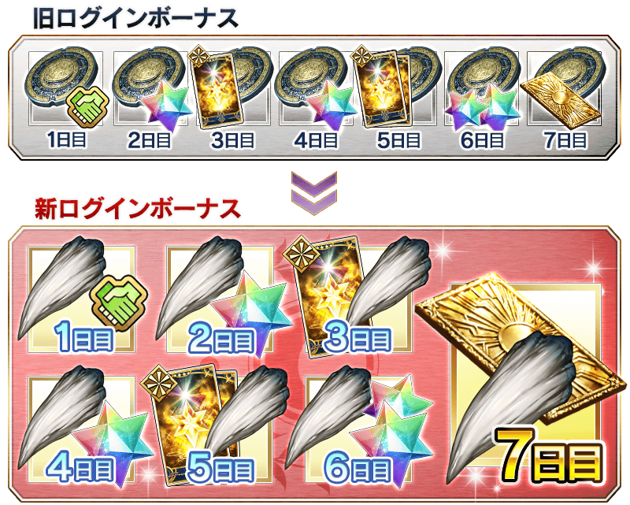
因在預定自2016年6月29日(三)16:00實施的「曜日關卡小翻新！」確認到問題，延期實施翻新。
詳情請在此處確認。※6/29(三)追記
|
在修練場關卡出現的敵人，追加在主線關卡第三章～第五章登場的敵人。 ※請注意在各關卡的道具掉落率並非100%。 ◆翻新實施日◆ ◆對象關卡◆ |
|
在達文西工作房能用マナプリズム交換的道具，追加600萬DL紀念商品！ ◆套組內容◆ ◆交換期間◆ |
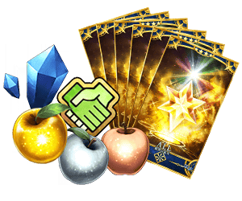 |
自6月30日（四）23:00，在達文西工作房的マナプリズム交換，追加新的限定概念禮裝。
◆交換期限◆
2016年6月30日（四）23:00～9月30日（五）22:59
|
◆マナプリズム交換＆期間限定概念禮裝◆ ★★★★★SSR |
開放瑪琇・基利艾拉特的等級上限的一部份。透過此次的開放，達到靈基再臨第2階段時上限開放的最大等級，從現狀的Lv.50變更為Lv.60。
◆開放日◆
2016年6月29日（三）16:00～
◆「600萬DL記念Pick Up召喚」期間◆
期間：2016年6月29日（三）16:00～7月6日（三）12:59
以期間限定舉辦「600萬DL記念Pick Up召喚」を開催！
紀念600萬DL突破Pick Up「★5(SSR)斯卡哈」！
詳情請在聖晶石召喚畫面左下的召喚詳細確認。
※斯卡哈在Pick Up期間結束後，不會追加到故事召喚。
並且，★3（R）概念禮裝的陣容一部份翻新！
「★3（R）ブロンズリンク・マニピュレーター」「★3（R）アトゴウラ」「★3（R）過ぎ去りし夢」「★3（R）激辛麻婆豆腐」「★3（R）宝石剣ゼルレッチ」先行新登場！

※伴隨著翻新，「★3（R）葦の海」「★3（R）ムーンセル・オートマトン」「★3（R）ルーンストーン」「★3（R）そして船は征く」「★3（R）魔猪」在Pick Up召喚不再是召喚對象。但仍可在故事召喚及友情點數召喚獲得。
※「★3（R）ブロンズリンク・マニピュレーター」「★3（R）アトゴウラ」「★3（R）過ぎ去りし夢」「★3（R）激辛麻婆豆腐」「★3（R）宝石剣ゼルレッチ」在Pick Up期間結束後，會追加到故事召喚。
※「★3（R）葦の海」「★3（R）ムーンセル・オートマトン」「★3（R）ルーンストーン」「★3（R）そして船は征く」「★3（R）魔猪」在Pick Up期間結束後，不再是故事召喚的召喚對象。
Pick Up期間中，Pick Up Servant的出現機率提升！
10次召喚★4(SR)以上1張確定和★3(R)以上的Servant1位確定！
※★4(SR)以上確定包含Servant和概念禮裝。
※所謂「出現機率UP」意指比同稀有度的Servant及概念禮裝出現機率更高的設定。
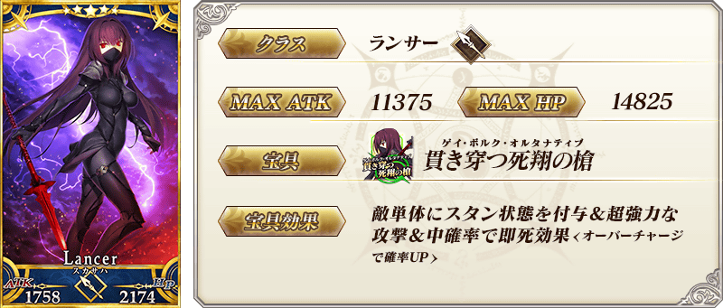
※6/29(四)追記
| 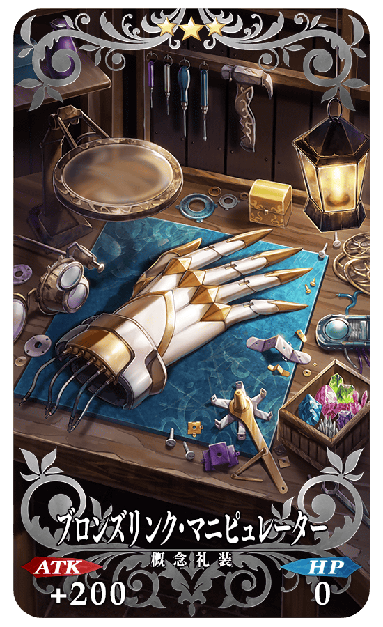 |
★★★R ブロンズリンク・マニピュレーター ATK 200（最大：1000） HP 0 技能 自身的攻擊力提升15%(3回合) |
| 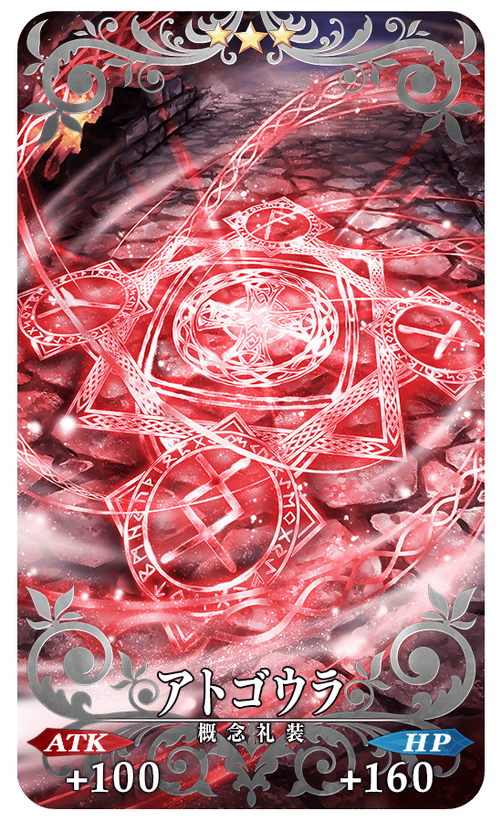 |
★★★R アトゴウラ ATK 100 （最大：500） HP 160（最大：800） 技能 自身的Quick卡性能提升10%＆防禦力下降10%【副作用】 |
| 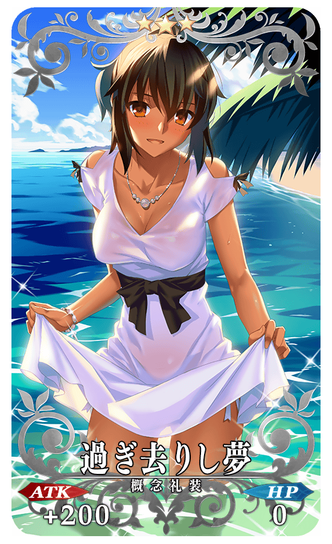 |
★★★R 過ぎ去りし夢 ATK 200（最大：1000） HP 0 技能 〔Assassin〕職階裝備的話寶具威力提升15% |
| 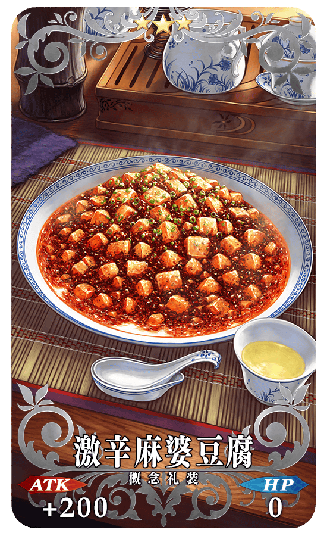 |
★★★R 激辛麻婆豆腐 ATK 200（最大：1000） HP 0（最大：0） 技能 自身的HP回復量提升10% |
| 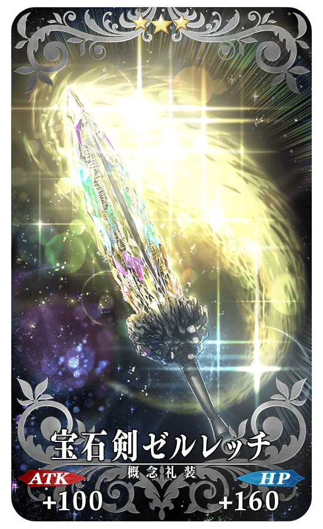 |
★★★R 宝石剣ゼルレッチ ATK 100（最大：500） HP 160（最大：800） 技能 自身的NP獲得量提升5%＆NP以25%累積狀態開始戰鬥 |
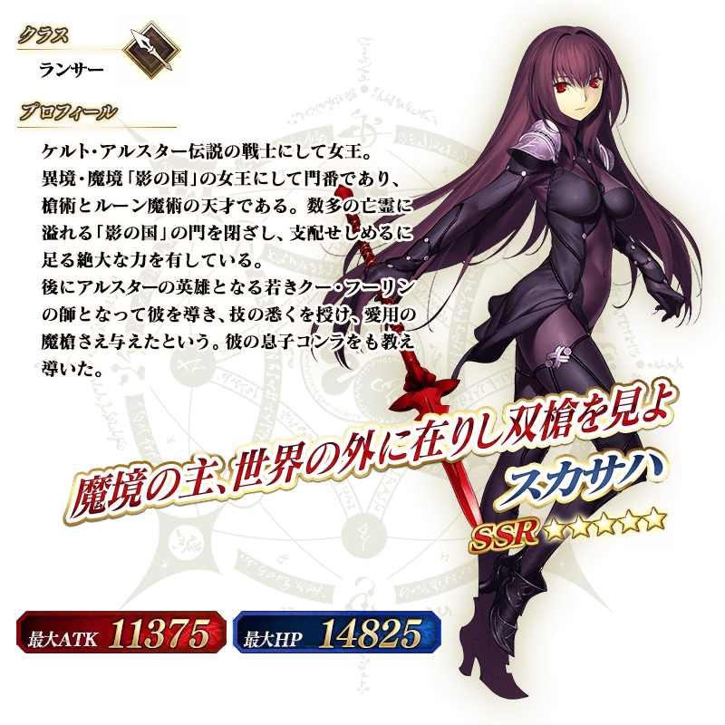